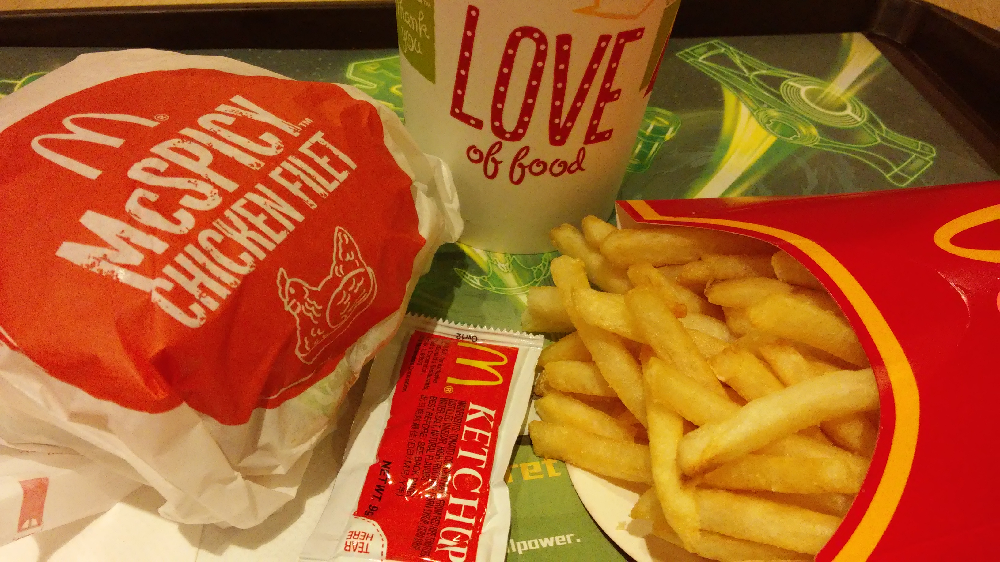

Lecture 1.3 - Advanced distributions activity
DKU Stats 101 Spring 2023

Lecture 1.3 in-class activity - more on distributions
We’ll work with some items from the McDonald’s menu to check our understanding of distributions.
Boxplots
Boxplot by hand practice
| Category | Min | Q1 | Mean Calories | Q3 | Max |
|---|---|---|---|---|---|
| Beef & Pork | 290 | 380 | 432 | 520 | 540 |
| Breakfast | 300 | 460 | 549 | 600 | 990 |
| Chicken & Fish | 380 | 430 | 486 | 480 | 670 |
- Make side-by-side boxplots of these three distributions by hand
- Which (if any) of these distributions have outliers?
- Which are right skewed? Left skewed? How do you know?
- What can you conclude from your hand-drawn graph?
Boxplot in ggplot
Now, make a boxplot using ggplot that replicates the ones you made by hand. Make sure to only display data on the main meal McDonald’s menu items, not the other categories (hint: use the filter verb).
Information on how to make boxplots using ggplot can be found here.
What are the outliers for the three categories? Look them up in the dataset and decide with your partner if there is a justification for excluding the items from the analysis or not.
Normal distribution
Assuming normality
For the below exercises, we are going to assume Carbohydrates are normally distributed. We will relax that assumption in the following section.
- What are the likely units of
Carbohydrates? What are healthy ranges of carbohydrates per day (research on your own). - Calculate and display the mean of
Carbohydrates. In what ways can using the mean be a problem here? - Calculate and display the standard deviation of
Carbohydratesusing thesd()command. - Then calculate the number of
Carbohydratesthat are -2, -1, 0, 1, and 2 standard deviations above and below the mean. Make a table using the Table menu. - If McDonalds decides that they want to make their menu healthier and eliminate menu items that are greater than 75 carbohydrates, about what percent of their menu items would they need to eliminate?
- How about if they wanted to eliminate all menu items that are less than 25 carbohydrates and greater than 75 carbohydrates?
Checking normality
- Make a histogram using
ggplotof carbohydrates. Does it match our assumptions of normality? - Investigate why there are deviations from normality. What factor(s) lead to this problem?
- Check the outliers - are the outliers a problem or not?